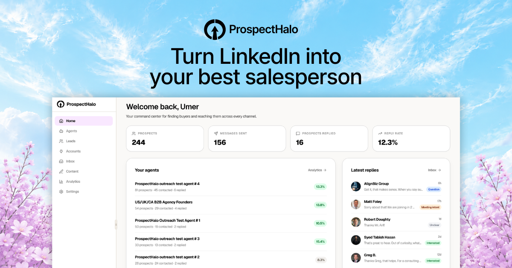
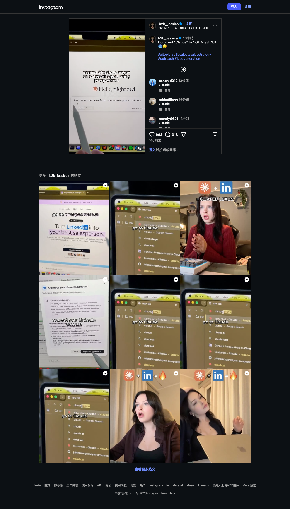

Instagram｜Claude 對話式啟動 LinkedIn 外聯？ProspectHalo MCP 的可驗證能力與合規邊界

一句話摘要
這支 Reel 真正值得保存的不是「自動印鈔」式標語，而是較具體的工作流：使用 ProspectHalo 的遠端 MCP，讓 Claude 在對話中建立或管理 ProspectHalo 的銷售外聯工作。第一方文件已說明 OAuth 連接與可做的工作；但成效、帳號安全與 LinkedIn 合規，不能由短影片或產品宣傳直接推論。
Reel 可見內容：22.5 秒的畫面式證據
Instagram 帳號 `b2b_jessica` 的 Reel 長約 22.48 秒；頁面擷取時可見 961 個讚、318 則留言，文案為 `Comment “Claude” to NOT MISS OUT`，並附 `#aitools #b2bsales #salesstrategy #outreach #leadgeneration`。本次僅在約第 3、10、16 秒取樣，並非完整逐字稿：
- 約第 3 秒：畫面以 Claude 的橘色圖示加上 LinkedIn 圖示，寫著 `= MONEY PRINTER`。這是社群作者的宣傳性比喻，不能當作收入或效果保證。
- 約第 10 秒：影片字幕寫 `create an account`；螢幕可見 `Login` 與 `Sign up`。沒有顯示帳號建立後的權限、方案或付款內容。
- 約第 16 秒：影片覆蓋文字為 `prompt Claude to create an outreach agent using prospecthalo`。Claude 輸入框中可辨識 `Create an outreach agent for my business using prospecthalo mcp`，並顯示 `Chat`、`Cowork` 與被裁切的 `Sonnet 5 · Medi...`。畫面尚未展示送出後的回覆、真正建立的 agent 或任何實際發送成果。

第一方資料確認：ProspectHalo MCP 實際提供什麼？
ProspectHalo 官方的 MCP 頁與 Help Center 說明，它將自己的銷售 agent 工作區以遠端 MCP server 連到 Claude 或其他支援遠端 MCP 與 OAuth 的 AI agent。官方列出的可對話式工作包括：
- 依目標客群尋找 prospects、建立合格名單。
- 建立與管理 LinkedIn、email 的 outreach。
- 建立 LinkedIn content、檢視 agent activity、replies 與結果。
- 查詢既有 agent、強勢 leads、已連接帳號的狀態，或協助調整 agent。
官方 Help Center 的示範使用 Claude，但亦聲稱同一 MCP 連接可用於 ChatGPT、Cursor、OpenClaw 和其他相容 agent。實際可否連線仍取決於使用的 AI app 是否支援遠端 MCP 與自動 OAuth 註冊、帳號的 connector 存取權，以及 ProspectHalo 的工作區／方案狀態。
連接方式的關鍵安全界線
官方指南指定 MCP endpoint 為：
https://app.prospecthalo.ai/api/agent/v1/mcp
它要求在 AI app 的 MCP／Connector／Tools 設定中加入遠端 server，使用自動 OAuth 註冊，並在 ProspectHalo 授權頁面審閱後連接。文件特別寫明：不應加入 API key、client secret 或額外 request headers。這是較可控的授權模式，但不表示可以跳過權限審閱：連接前仍應確認資料範圍、可操作帳號、撤銷方式與通知機制。
不要把外聯 agent 當成免審核的自動發送器
ProspectHalo 的產品頁宣稱可從使用者自有帳號發出 LinkedIn／email 訊息、進行 follow-up，並提供 approval、每日上限與 warmup 等設定；這些皆為供應商的產品敘述。產品條款同時禁止 spam、harassment、unlawful scraping、credential abuse 與違法訊息，且使用者須對使用資料與聯絡人的方式負責。
更穩妥的導入方式：
- 先只建立一個非敏感測試 campaign，讓 AI 協助定義 offer、受眾、渠道與文案，不直接授權大量送出。
- 對首封訊息與高風險變更使用人工批准；在確認個資、語氣、主張與目標名單後才發送。
- 設定小型每日上限、停止條件與回覆升級規則；不要把「無回應就追蹤」設為無限制循環。
- 不將 LinkedIn 密碼、Cookie、長效 token、私訊匯出檔或完整客戶名單貼進 Claude 對話。
- 檢查 LinkedIn 的現行 User Agreement、官方 API／已授權 integration 的適用範圍，以及公司所在地的個資與反垃圾訊息義務。
證據與限制
- Reel 證明的是作者的宣傳文案與取樣畫面；它沒有公開完整 prompt、agent 設定、OAuth scope、訊息內容、發送紀錄、成本或營收成效。
- ProspectHalo 的連接、MCP URL 與功能範圍來自其官方網站及 Help Center；供應商的功能、價格與可用性會變動，實作前應再確認。
- 本次未建立 ProspectHalo 帳號、未連接任何 LinkedIn 或 email 帳號、未呼叫 MCP，也未測試寄送、資料來源或成效。
原始與查核連結
- Instagram Reel：https://www.instagram.com/reel/DeT01p8RDM4/?cplk=MTN3c3BnZDh4MjY3cQ==
- ProspectHalo MCP：https://prospecthalo.ai/mcp-server
- ProspectHalo 官方連接指南：https://help.prospecthalo.ai/en/articles/16744078-connect-prospecthalo-to-claude-and-other-ai-agents-with-mcp
- LinkedIn User Agreement：https://www.linkedin.com/legal/user-agreement
來源擷取紀錄：`source-archive/2026-10-11-instagram-b2b-jessica-prospecthalo-claude-mcp.json`